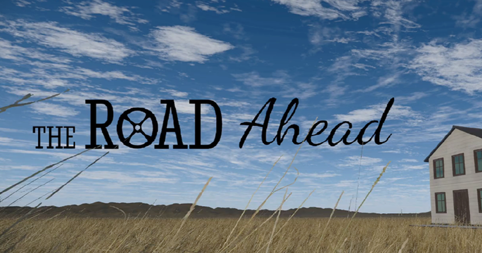
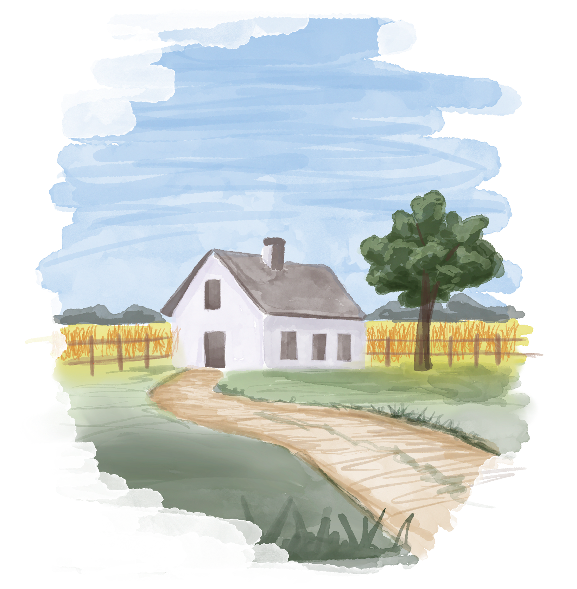
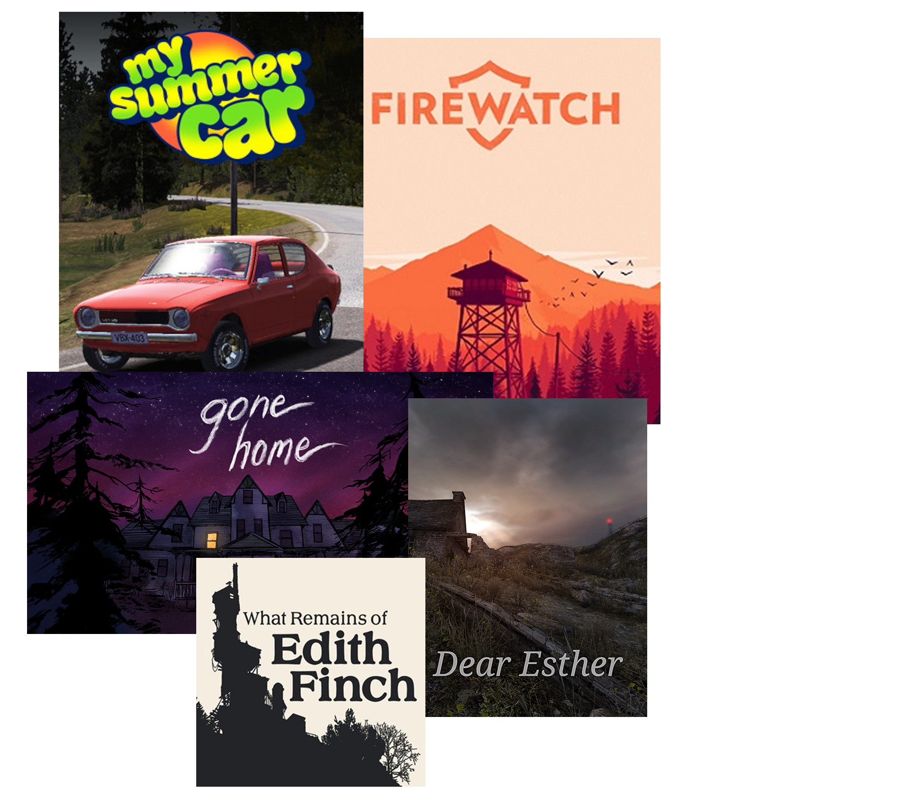
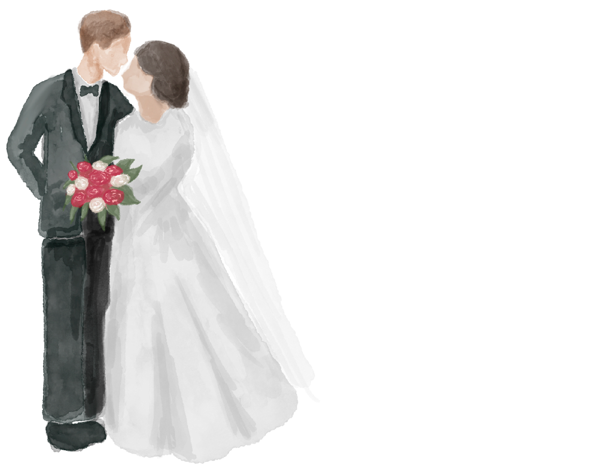

POST 1 - WHERE IT ALL STARTED
October 12, 2026
How we came up with the idea for The Road Ahead

Welcome to the first DevBlog post for The Road Ahead! Since we've already been working on the project for a while, we thought it would make sense to look back at how it all began and how the idea has developed so far.
There's quite a bit to catch up on, so this first post might be a little longer than the ones to come. After this, we hope to publish a new post every other week.
We're excited to start sharing more of the process behind The Road Ahead and take you along as we continue developing the game.
FINDING A DIRECTION
The idea for The Road Ahead started with two quite different visions for our bachelor project. Sanne wanted to create an atmospheric 2D platformer exploring psychological experiences, while Marius wanted to make a driving game.
Finding an idea that combined both interests took some time. Eventually, we returned to an idea Marius had been thinking about earlier and started discussing how we could make it work for both of us. Neither of us wanted to give up on our original ideas completely, so we had to find a compromise that we were both excited about.
This became the starting point for The Road Ahead: a narrative-driven adventure that combines driving, puzzle-solving and emotional storytelling.

LOOKING AT OUR INSPIRATION
We looked at quite a few games while developing the concept, but My Summer Car and Firewatch were two of our early references. Marius was already familiar with My Summer Car, and we liked how the game turns working on and building a car into part of the gameplay through hands-on interactions and problem-solving. With Firewatch, we were interested in how atmosphere, exploration and character-driven storytelling work together.
As we developed the idea further, we also explored games like Dear Esther and Gone Home to see how other games approached narrative and exploration. Dear Esther relies heavily on atmosphere and narration, while Gone Home lets players piece together a story by exploring a house and examining the objects inside. We were already familiar with What Remains of Edith Finch , and its use of different gameplay experiences to tell character stories was another approach we found interesting.

We didn't want to take one of these games and use it as a blueprint, but rather explore how we could bring together elements from different types of games.
But combining car mechanics and puzzle-solving with a more emotionally driven, narrative-focused game also raised some questions: How much should the player actually drive? How do we make repairing a car feel emotionally meaningful? And how do we make sure the gameplay supports the story rather than distracting from it?
CONNECTING THE CAR TO THE STORY
So, how do we make the car and driving fit into the narrative? We didn't want the car to feel like a separate gameplay feature that existed just because we wanted to include driving. Why would Susie need to repair a car if it had no meaningful connection to her story?
We started exploring how repairing the car could become part of Susie's journey. We wanted there to be a reason for her to spend so much time restoring it, beyond simply needing it to drive. The car needed to mean something to her, and we wanted that to come across through the gameplay as well as the story.

We're still exploring how to bring these two sides together. Driving isn't the main focus of the game, but the car remains an important part of both the gameplay and the narrative. We also hope that combining driving with a more emotional story could appeal to players who might not normally be interested in either type of game.
We won't really know how well everything works until we start building and testing our ideas. For now, we're trying to find a balance where the gameplay feels meaningful without taking away from the story we're trying to tell.
FINDING THE BALANCE
Finding the right balance between gameplay and storytelling is still one of our biggest challenges. We want the player's journey to reflect Susie's emotional state without relying too heavily on text or voice-over. We're still exploring how we can use the environment, interactions and gameplay to show what she's going through and how she's feeling.
Another thing we've been reconsidering is the scope of the project. We initially planned for the game to have three acts, but feedback from our supervisors made us take another look at how much we can realistically develop within the time we have. As third-year students, we also have the opportunity to do an internship during our final semester, which means we need to consider how much time we'll have left to work on the game.
We're not yet sure what things will look like next semester, but for now, we're exploring how we can bring the story to a satisfying conclusion without making the game bigger than it needs to be.
We're still in pre-production, so things can still change. We have a general direction for The Road Ahead, but there's still a lot we need to test before we know what works. For now, we're figuring out how to bring driving, puzzle-solving and emotional storytelling together in a way that feels right for the game.
That's where we're at for now. We'll keep you updated as we go!